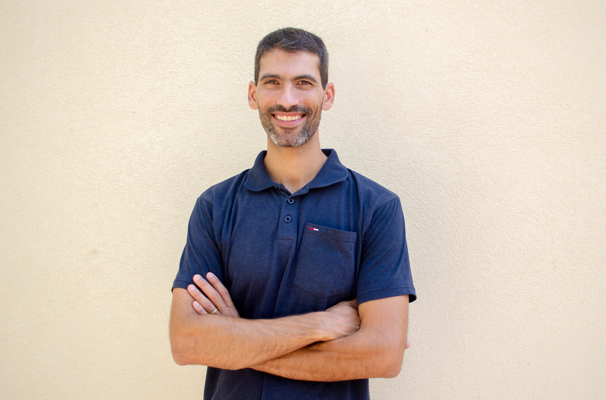

מיכאל צדוק
מנכ"לנשוי לנגה ואב לאילה ונווה, מתגורר במושב עידן.
שירת שש וחצי שנים ביחידה מובחרת, וכיום הוא מפקד במילואים בדרגת רב-סרן. מאז שחרורו מצה"ל הוא עוסק בעשייה חברתית וציבורית בדגש חינוכי. בעל תואר ראשון בפילוסופיה, כלכלה ומדעי המדינה ותואר שני במנהל עסקים מהאוניברסיטה העברית, ובוגר תכנית הלימודים לזהות ומדיניות של המכללה למדינאות. עבד באגף תכנון ואסטרטגיה של משרד החינוך, ובתפקידי ניהול בעמותת יוצאי שלדג ובעמותת פעמונים.
התרומה ללכידות החברה ולסולידריות בה, והצורך במעורבות חברתית ואזרחית, הם אבני יסוד בהשקפתו האישית והניהולית. מאמין בבניית תשתית לשותפות ואמון בין האוכלוסיות השונות בחברה הישראלית.